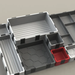
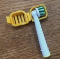
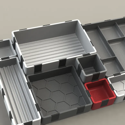
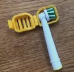

Impresión 3D:un mundo de posibilidades
La impresión 3D con FDM (Fabricación por Deposición de Material Fundido) es una tecnología revolucionaria que ha cambiado la forma en que diseñamos, prototipamos y fabricamos objetos. Esta técnica, también conocida como modelado por deposición fundida, utiliza una impresora especial para crear objetos tridimensionales a partir de un modelo digital.
¿Que es la impresión 3D?
La impresión 3D es un proceso mediante el cual se crea un objeto físico capa por capa a partir de materiales como plástico, resina o metal, utilizando un archivo digital o modelo en 3D. A diferencia de los métodos de fabricación tradicionales, que suelen ser sustractivos (eliminar material) o deformación (moldeo), la impresión 3D es un proceso aditivo que permite crear estructuras altamente complejas y personalizadas con una precisión increíble.
¿Cómo funciona?
La impresión 3D con FDM funciona gracias a una impresora especializada que combina tecnología de extrusión y deposición de material fundido. El proceso comienza con la creación o escaneo de un modelo digital en 3D, que se divide en capas sucesivas. La impresora caliente y funde un filamento de material termoplástico, como el ABS o el PLA, y lo extruye a través de una boquilla muy fina. El material fundido se deposita capa por capa en la plataforma de impresión, solidificándose rápidamente para formar el objeto final. Esto se repite hasta que se crea el objeto completo según el diseño digital original.
Impresoras 3D
Existen diferentes tipos de impresora 3D si hablamos de impresión 3D doméstica:
Impresora 3D Cartesiana
Estas son las impresoras 3D más comunes y populares. Utilizan un sistema de movimiento basado en ejes X, Y y Z que se mueven en líneas rectas cartesianas. El cabezal de impresión se desplaza horizontalmente en el plano XY, mientras que la plataforma de construcción se mueve verticalmente en el eje Z. Estas impresoras son relativamente fáciles de construir, calibrar y utilizar, lo que las hace adecuadas para principiantes y aficionados.
Impresora 3D Delta
Las impresoras 3D delta utilizan un sistema de movimiento basado en tres brazos conectados a una plataforma de impresión central. Estos brazos se extienden verticalmente y se desplazan de forma coordinada para mover la boquilla de impresión en el eje Z, X e Y. Este diseño permite movimientos rápidos y suaves, lo que las hace ideales para la impresión de objetos altos y delgados. Sin embargo, pueden requerir una mayor calibración y ajuste en comparación con las impresoras cartesianas.
Impresora 3D Polar
Las impresoras 3D polar, también conocidas como impresoras cilíndricas, utilizan un sistema de movimiento polar en el que la base de impresión gira y el cabezal de impresión se mueve en un eje que lo atraviesa. Este diseño permite una mayor libertad de movimiento y un rendimiento suave en la impresión de objetos redondos o cilíndricos. Sin embargo, estas impresoras pueden ser más complejas de construir y calibrar.
Ejemplos de uso
En esta sección, exploraremos algunos ejemplos destacados de uso de la impresión 3D doméstica. Desde la producción de objetos decorativos y utilitarios personalizados hasta la creación de prototipos o piezas de repuesto, estos ejemplos ilustrarán el potencial y las posibilidades infinitas que brinda esta tecnología en el ámbito del hogar. Descubre cómo la impresión 3D puede mejorar y enriquecer tu vida diaria a través de la capacidad de materializar tus ideas y diseños en algo tangible y funcional. ¡Explora los diversos ejemplos de uso de la impresión 3D doméstica y adéntrate en el emocionante mundo de la fabricación aditiva en casa!
Objetos decorativos
Puedes utilizar la impresora 3D para crear objetos decorativos como figuras, estatuillas, jarrones, marcos de fotos, lámparas y muchos otros elementos para embellecer tu hogar.
Juegos y juguetes personalizados
La impresión 3D te permite diseñar y crear tus propios juguetes personalizados, desde rompecabezas y cochecitos hasta figuras de acción y juegos de mesa. Es una excelente manera de estimular la creatividad y proporcionar juguetes únicos a los niños
Objetos decorativos
Puedes utilizar la impresora 3D para crear objetos decorativos como figuras, estatuillas, jarrones, marcos de fotos, lámparas y muchos otros elementos para embellecer tu hogar.
 



Juegos y juguetes personalizados
La impresión 3D te permite diseñar y crear tus propios juguetes personalizados, desde rompecabezas y cochecitos hasta figuras de acción y juegos de mesa. Es una excelente manera de estimular la creatividad y proporcionar juguetes únicos a los niños